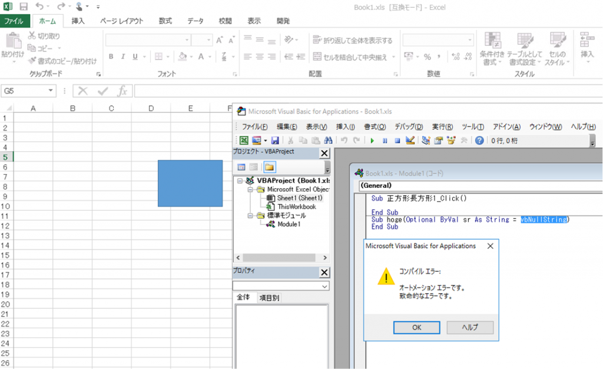

(※ 2017 年 5 月 17 日に Japan Office Developer Support Blog に公開した情報のアーカイブです。)
2017/12/12 Update
本現象を修正する Excel 2013 向け更新プログラムを公開しました。Excel 2016 向けの修正も追って公開予定です。
2018/1/26 Update
Excel 2016 向けの修正を公開しました。合わせて、記事全体の構成を見直しました。
こんにちは、Office 開発 サポート チームの多田です。
今回は 2017 年 5 月 2 日にリリースされた Excel の更新プログラム KB3191877 を適用した Excel 2013 (MSI インストーラ形式) 、および同等の更新を含む Excel 2016 バージョン 1705 (クイック実行形式) 以降において、特定の条件下で Excel を起動する際に VBA のコンパイルエラーを示すダイアログが表示される動作について紹介します。

図 1. VBA のコンパイルエラーが発生
現象
以下の手順にて Excel ブックおよび VBA を作成して Excel 97-2003 形式 (.xls) で保存した際に、ブックを開くときに自動的に行われる VBA のコンパイルでエラーが発生します。
現象再現手順 (Excel 2013 の場合)
^^^^^^^^^^^^^^^^^^^^^^^^^^
1. Excel 2013 SP1 に以下の KB 3191877 を適用します。
タイトル : May 2, 2017, update for Excel 2013 (KB3191877)
アドレス : https://support.microsoft.com/ja-jp/help/3191877
2. Excel で新規ブックを作成します。
3. [挿入] - [図] - [図形] で任意の図形を挿入します。
4. 上記手順 3 で挿入した図形を右クリックし、[マクロの登録] をクリックします。
5. [新規作成] をクリックします。
6. 表示された VBA にて、以下のようなコードを追加します。(ここでは例として手順 3. で “正方形長方形” を追加したとします)
<追加前>
1 | Sub 正方形長方形 1_Click() |
<追加後>
1 | Sub 正方形長方形 1_Click() |
7. VBA を保存します。
8. Excel のファイルを Excel 97 - 2003 ブック (*.xls) として保存して、ファイルを閉じます。
9. 保存したファイルを開きます。セキュリティの警告のバーが表示されますので、[コンテンツの有効化] をクリックし、ファイルを閉じます。
10. 保存したファイルを再度開きます。コンパイルエラーのダイアログが表示されることを確認します。
※ また、上記手順 6. にて以下のようなコードを記述した場合でも現象が発生します。基本的には、図形のクリックイベントと同じモジュール内において、内部的に定義されているオブジェクトを参照した場合に発生いたしますが、発生パターンは様々です。
<他の現象発生パターン>
1 | Dim hoge As Workbook |
対象製品
Excel 2013 MSI インストーラ版 : 15.0.4927.1000 以降
Excel 2016 クイック実行版 : バージョン 1705 (ビルド 8117.1000) 以降
※ Excel 2016 MSI インストーラ版では本現象が発生する契機となる修正が含まれないため、現象は発生しません。
原因
KB 3191877 では、特定の条件下においてマクロを含むファイルを開く際に Excel がハングアップする問題に対して、明示的にコンパイルエラーを検出しハングアップを回避する修正を実施しています。今回の現象は、この修正の影響で VBA コード上は問題ないため本来検出不要なコンパイルエラーが検出され、結果としてエラーダイアログが表示される動作が生じています。
2018/1/26 Update
解決方法
以下の更新で修正されましたので、本現象を解決するには、修正プログラムを適用してください。
Excel 2013
文書番号 : KB4011597
タイトル : 2017 年 12 月 5日は、Excel 2013 (KB4011597) の更新します。
アドレス : https://support.microsoft.com/ja-jp/help/4011597
Excel 2016
バージョン 1712 (ビルド 8827.2148)
修正バージョンの各チャネルへの公開状況は、以下の公開情報をご確認ください。
タイトル : 更新プログラム チャネル リリースのバージョン番号とビルド番号
アドレス : https://support.office.com/ja-jp/article/ae942449-1fca-4484-898b-a933ea23def7
回避策
更新の適用が難しい場合は、問題が発生するファイルを Excel 2007 形式のファイル「Excel マクロ有効ブック (*.xlsm)」 形式で保存し直すと、この現象を回避することができます。
今回の投稿は以上です。
本情報の内容 (添付文書、リンク先などを含む) は、作成日時点でのものであり、予告なく変更される場合があります。